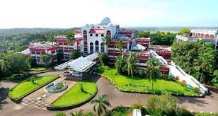

MES College of Engineering (MESCE) is a Kuttippuram, Malappuram-based private engineering college. It is Kerala's first self-financing engineering college, with a campus that extends for more than a mile (1.6 km) alongside the Bharathappuzha River.It was founded in 1994 as a minority-serving institution.
